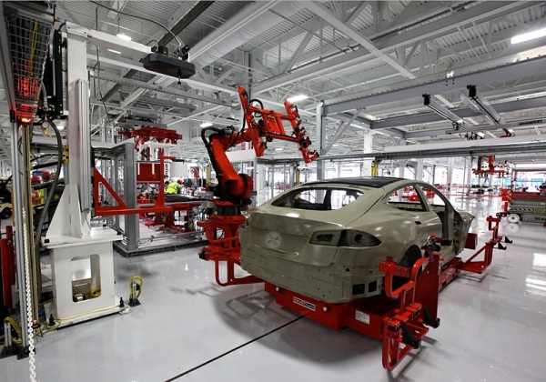

녹색식물처럼, 무기물을 가지고 광합성을 하여 유기물을 만들어내는 생물을 말한다. 다른 생물에게 영양이 된다. 광합성을 하는 녹색식물이나 광합성 식물이 포함되며 독립영양을 영위하고 생태계 안에서 다른 생물의 영양원이 된다. 생태계에서 일어나는 에너지의 흐름과 물질순환에 있어서, 외계의 에너지를 화학에너지로 취하여 무기화합물로부터 유기화합물을 만드는 구실을 하는 생물이다. 무기영양생물(독립영양생물 또는 자가영양생물이라고도 함)이 이에 해당된다. 1918년에 독일의 생물학자 A.티네만이 처음으로 이 말을 썼다. 상대어로서 소비자·분해자가 있다. 자연계에는 광합성을 하는 녹색식물이 압도적으로 많은데, 이것들이 생산자의 대부분을 차지한다. 그런데 일부의 효소 등에서는 여러 가지 화학합성을 하는 생물이 많아 이것이 생산자의 주요 부분을 차지하는 경우도 있다. 또 유기영양생물(종속영양생물이라고도 함)을 소비자 또는 분해자라고 일컫는 것은 그 기능으로 보아서 적당하지 않다고 하는 주장이 있는데, 그 주장대로라면 여기서 말하는 생산자는 제1차 생산자를 말한다. [네이버 지식백과] 생산자 [生産者] (두산백과)
